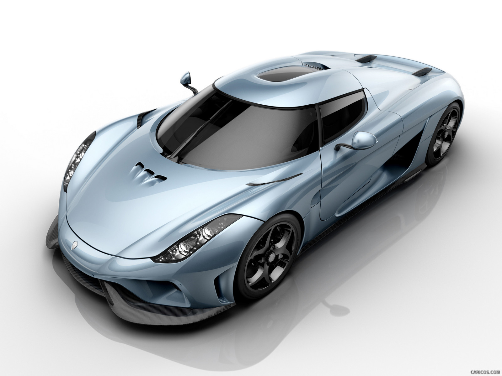
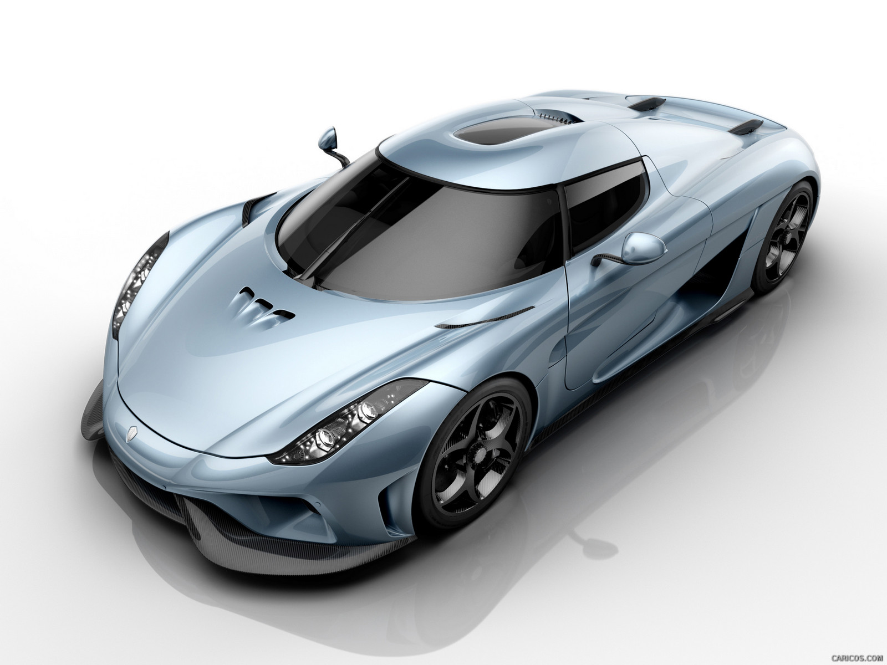

Koenigsegg Regera
The Koenigsegg Regera:
1)Hybrid Power: The Regera features a hybrid powertrain that combines a twin-turbocharged V8 engine with electric motors, delivering a total output of 1,500 horsepower.
2)Direct Drive: Unlike traditional transmissions, the Regera utilizes Koenigsegg's unique Direct Drive system, which provides a seamless power transfer without the need for gears.
3)Exceptional Performance: With its immense power, the Regera can accelerate from 0 to 60 mph (0 to 97 km/h) in just 2.8 seconds and has a top speed of over 250 mph (400 km/h).
4)Electric Motors: The Regera incorporates three electric motors, including one on the crankshaft and two on the rear wheels, which contribute to its impressive acceleration and offer all-electric driving capabilities.
5)High-Capacity Battery: The Regera's battery pack has a capacity of 4.5 kWh and operates at 800 volts, providing ample power to the electric motors.
6)Lightweight Construction: The Regera's body is constructed primarily of carbon fiber, resulting in a lightweight yet rigid structure that enhances performance and fuel efficiency.
7)Active Aerodynamics: The car features an active rear wing that adjusts its position to optimize downforce and stability at different speeds.
8)Limited Production: Only 80 units of the Regera were planned for production, making it a highly exclusive and rare hypercar.
9)Luxurious Interior: The Regera's interior is crafted with high-quality materials, offering comfort and luxury, including leather upholstery, advanced infotainment system, and a digital instrument cluster.
10)Innovative Features: The Regera incorporates various innovative technologies, such as regenerative braking, which recovers energy during deceleration, and advanced connectivity features to enhance the driving experience.
 
